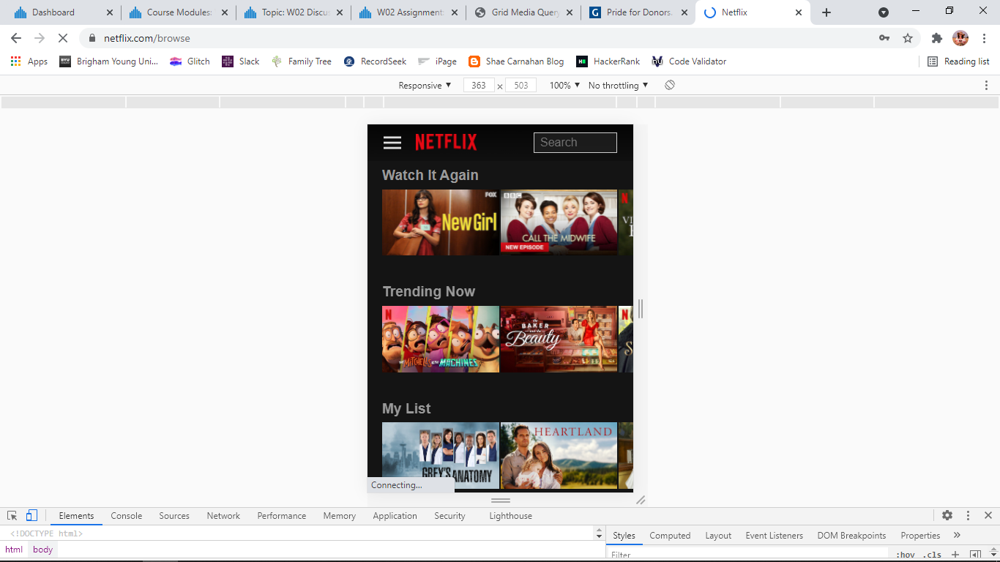
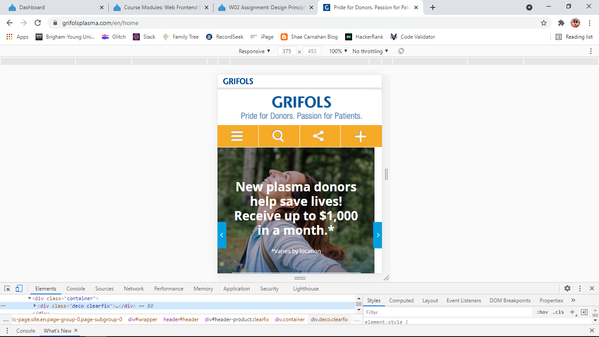
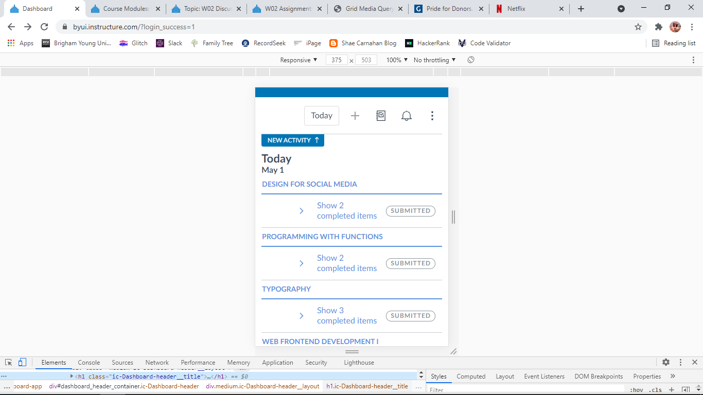

Contrast
Netflix
https://www.netflix.com/browse Netflix's site shows contrast by having a dramatic difference between the black background and the colorful television show or movie options to look at. This contrast allows the users to focus on the important part of their Netflix experience.
White Space and Clean Design
Grifols Plasma Donations
https://www.grifolsplasma.com/en/home Grifols has a clean webpage, with distinct choices on what you should click to get to where you want to go. Moving past the screenshot, scrolling down, you see three big circles of options on more that you can click to get you right where you need to go! They also use white space in their logo area, giving a clean and concise look to their webpage.
Alignment
Canvas
https://byui.instructure.com/?login_success=1 Canvas very clearly uses repitition. It shows the same view for each class, just with different headings. Doing this keeps things organized for the students who are using it!